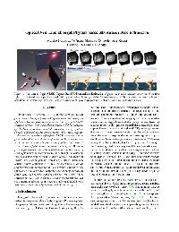

Mariko Isogawa >Optical Non-Line-of-Sight Physics-based 3D Human Pose Estimation
Optical Non-Line-of-Sight Physics-based 3D Human Pose Estimation
We describe a method for 3D human pose estimation from transient images (i.e., a 3D spatio-temporal histogram of photons) acquired by an optical non-line-of-sight (NLOS) imaging system. Our method can perceive 3D human pose by `looking around corners' through the use of light indirectly reflected by the environment. We bring together a diverse set of technologies from NLOS imaging, human pose estimation and deep reinforcement learning to construct an end-to-end data processing pipeline that converts a raw stream of photon measurements into a full 3D human pose sequence estimate. Our contributions are the design of data representation process which includes (1) a learnable inverse point spread function (PSF) to convert raw transient images into a deep feature vector; (2) a neural humanoid control policy conditioned on the transient image feature and learned from interactions with a physics simulator; and (3) a data synthesis and augmentation strategy based on depth data that can be transferred to a real-world NLOS imaging system. Our preliminary experiments suggest that our method is able to generalize to real-world NLOS measurement to estimate physically-valid 3D human poses.
Video
Paper
Bibtex
@inproceedings{isogawa2020pose,
title={Optical Non-Line-of-Sight Physics-based 3D Human Pose Estimation},
author={Isogawa, Mariko and Yuan, Ye and O'Toole, Matthew and Kitani, Kris},
booktitle={IEEE International Conference on Computer Vision and Pattern Recognition (CVPR)},
year={2020},
pages={--}
}